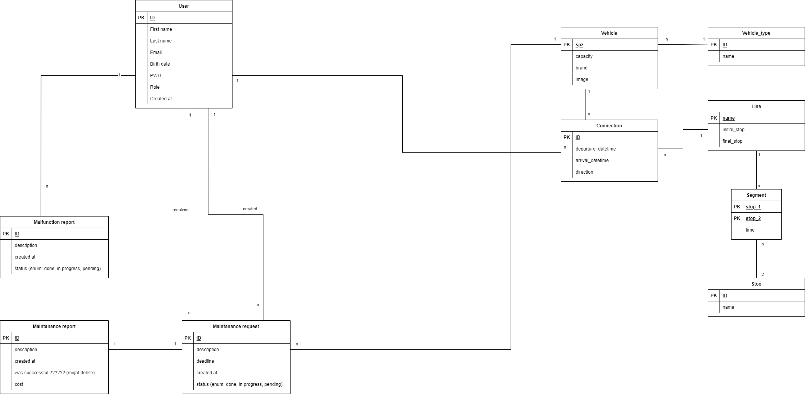

Dopravní podnik
- Autoøi
- Adam Pekný
xpekny00@stud.fit.vutbr.cz -
Správa u¾ívateµov, správa porúch
- Jakub Kontrík
xkontr02@stud.fit.vutbr.cz -
Správa liniek a spojov, seeding databázi
- Samuel Slávik
xslavi37@stud.fit.vutbr.cz -
Správa zastávok, správa vozidiel, správa údr¾by
- URL aplikace
- https://iis-beryl.vercel.app/
U¾ivatelé systému pro testování
Uveïte prosím existující zástupce v¹ech rolí u¾ivatelù.
| Login | Heslo | Role |
|---|
| user@admin.com | DmiInbN5 | Administrátor |
| user@superuser.com | password | Správca |
| user@dispatcher.com | password | Dispeèer |
| user@driver.com | password | Vodiè |
| user@technician.com | password | Technik |
(Diagram pøípadù u¾ití není nutné vkládat, pokud IS implementuje role a pøípady u¾ití definované zadáním.)
Video
Pøilo¾te odkaz na komentované video demostrující pou¾ití informaèního systému. Zamìøte se na pøípady u¾ití definované zadáním (napø. registrace u¾ivatele, správa u¾ivatelù a èinnosti jednotlivých rolí). Video nahrajte napøíklad na VUT Google Drive, kde ho bude mo¾né pøímo spustit z odkazu.
Implementace
Struèná dokumentace k implementaci, která popisuje, které èásti projektu (napø. PHP skripty) implementují jednotlivé pøípady pou¾ití.
Implementácia pozostáva z dvoch hlavných èastí, a to frontendu a backendu.
Frontend:
Frontend je implementovaný pomocou frameworku VueJS a nachádza sa na adrese https://iis-beryl.vercel.app/.
Frontend prostredníctvom axiosu zasiela HTTP po¾iadavky na doménu https://adam.mihocka.cz, ktorá preposiela po¾iadavky backend API a následne vracia odpoveï.
Backend:
Backend je implementovaný pomocou PostgreSQL, Golang a frameworkov Gin a GORM. Backend príma po¾iadavky pomocou súboru router.go, kde rozhoduje aká funkcia zo súborov z prieèinku backend/views/ danú po¾iadavku obslú¾i.
Obsluha po¾iadavku prebieha vo views pomocou serializérov a modelov v odpovedajúcich súboroch v prieèinkoch backend/serializers/ a backend/models/.
Serializéry slú¾ia pre serializáciu dát z po¾iadavkov a následne aj do nich.
Modely slú¾ia pre prácu s databázou ako získavanie, ukladanie alebo menenie dát a pre migrácie modelov (aktualizáciu schémy relaènej databáze).
Pre overovanie u¾ívateµských rolí a prístupových práv sa pou¾íva modul middleware/requireauth.go
Administrátor
Zabezpeèenie v¹etkých práv pre administrátora je v moduli middleware/requireauth.go, ktorý zabezpeèuje ¾e pri administrátorovi sa neoveruje vy¾adovaná rola.
Správa u¾ívateµov:
Frontend komponenty:
- frontend/pages/user/admin/EditUser.vue
- frontend/pages/user/admin/NewUser.vue
- frontend/pages/user/admin/UserDetail.vue
- frontend/pages/user/admin/UsersList.vue
Backend:
- backend/views/users.go
- backend/serializers/users.go
- backend/validators/users.go
- backend/models/users.go
Správca
Správa liniek a spojov:
Frontend komponenty:
- frontend/pages/user/superuser/Connections.vue
- frontend/pages/user/superuser/EditLine.vue
- frontend/pages/user/superuser/EditStop.vue
- frontend/pages/user/superuser/LineDetail.vue
- frontend/pages/user/superuser/Lines.vue
- frontend/pages/user/superuser/NewLine.vue
- frontend/pages/user/superuser/NewStop.vue
- frontend/pages/user/superuser/StopDetail.vue
- frontend/pages/user/superuser/Stops.vue
Backend:
- backend/views/connections.go
- backend/views/lines.go
- backend/views/stops.go
- backend/serializers/connections.go
- backend/serializers/lines.go
- backend/serializers/stops.go
- backend/validators/connections.go
- backend/validators/lines.go
- backend/models/connections.go
- backend/models/lines.go
- backend/models/stops.go
Správa vozidiel a údr¾by:
Frontend komponenty:
- frontend/pages/user/superuser/Malfunctions.vue
- frontend/pages/user/superuser/NewRequest.vue
- frontend/pages/user/superuser/RequestDetail.vue
- frontend/pages/user/superuser/Requests.vue
- frontend/pages/user/superuser/VehiclesList.vue
- frontend/pages/user/superuser/VehicleDetail.vue
Backend:
- backend/views/maintenance.go
- backend/views/vehicles.go
- backend/serializers/maintenance.go
- backend/serializers/vehicles.go
- backend/validators/maintenance.go
- backend/validators/vehicles.go
- backend/models/maintenance.go
- backend/models/vehicles.go
Technik
Správa záznamov o údr¾be vozidiel:
Frontend komponenty:
- frontend/pages/user/technician/MyRequestComplete.vue
- frontend/pages/user/technician/MyRequestDetail.vue
- frontend/pages/user/technician/MyRequests.vue
- frontend/pages/user/technician/MyRequestComplete.vue
Backend:
- backend/views/maintenance.go
- backend/serializers/maintenance.go
- backend/serializers/vehicles.go
- backend/serializers/users.go
- backend/validators/maintenance.go
- backend/validators/vehicles.go
- backend/validators/users.go
- backend/models/maintenance.go
- backend/models/vehicles.go
- backend/models/users.go
Dispeèer
Alokácia vozidiel a vodièov na spoje:
Frontend komponenty:
- frontend/pages/user/dispatcher/ConnectionDetail.vue
- frontend/pages/user/dispatcher/Connections.vue
- frontend/pages/user/dispatcher/Lines.vue
Backend:
- backend/views/connections.go
- backend/serializers/connections.go
- backend/serializers/vehicles.go
- backend/serializers/users.go
- backend/validators/connections.go
- backend/validators/vehicles.go
- backend/validators/users.go
- backend/models/connections.go
- backend/models/vehicles.go
- backend/models/users.go
Vodiè
Hlásenie závad:
Frontend komponenty:
- frontend/pages/user/driver/EditMyMalfunction.vue
- frontend/pages/user/driver/MalfunctionDetail.vue
- frontend/pages/user/driver/MyMalfunctions.vue
- frontend/pages/user/driver/NewMalfunction.vue
Backend:
- backend/views/maintenance.go
- backend/serializers/maintenance.go
- backend/serializers/vehicles.go
- backend/serializers/users.go
- backend/validators/maintenance.go
- backend/validators/vehicles.go
- backend/validators/users.go
- backend/models/maintenance.go
- backend/models/vehicles.go
- backend/models/users.go
Sledovanie svojho plánu:
Frontend komponenty:
- frontend/pages/user/driver/MyPlan.vue
Backend:
- backend/views/connections.go
- backend/serializers/connections.go
- backend/serializers/vehicles.go
- backend/serializers/users.go
- backend/validators/connections.go
- backend/validators/vehicles.go
- backend/validators/users.go
- backend/models/connections.go
- backend/models/vehicles.go
- backend/models/users.go
Neregistrovaný u¾ívateµ
Prechádzanie spojov:
Frontend komponenty:
- frontend/pages/homepage/Homepage.vue
- frontend/pages/homepage/HomepageConnectionDetail.vue
- frontend/pages/homepage/HomepageLineConnections.vue
Backend:
- backend/views/connections.go
- backend/serializers/connections.go
- backend/validators/connections.go
- backend/models/connections.go
Databáze

Instalace
Struènì popi¹te:
- postup instalace na server,
- softwarové po¾adavky (verze PHP apod.),
- jak rozbalit, konfigurovat, inicializovat databázi, ...
Postup in¹talácie
Backend:
- Pomocou príkazu 'docker-compose up -d' v koreòovom prieèinku vytvoríme a spustíme kontainer s databázou.
- Pomocou príkazu 'go build' v koreòovom prieèinku prelo¾íme backend.
- Výsledný binárny súbor spustíme pomocou príkazu './IIS'.
- Spustenie backendu automaticky vykoná migrácie v databáze a vytvorí administrátorský úèet pokiaµ ¾iadny neexistuje.
- Automaticky vytvorený administrátor bude ma» prístupové údaje email: user@admin.com a heslo: DmiInbN5
Frontend:
- Pomocou príkazu 'npm install' v prieèinku frontend/ nain¹talujeme potrebné závislosti.
- Pomocou príkazu 'npm run dev' v prieèinku frontend/ spustíme frontend.
Softwarové po¾iadavky
- node verzia 14+
- Golang verzia 1.18+
- docker-compose
Známé problémy
Zde popi¹te, které body zadání nejsou implementovány a z jakého dùvodu. Napø. „Z èasových dùvodù nebyla implementována správa u¾ivatelù.” Pomù¾ete tím zrychlit hodnocení, kdy¾ neimplementované funkce nebudeme muset dlouze hledat.